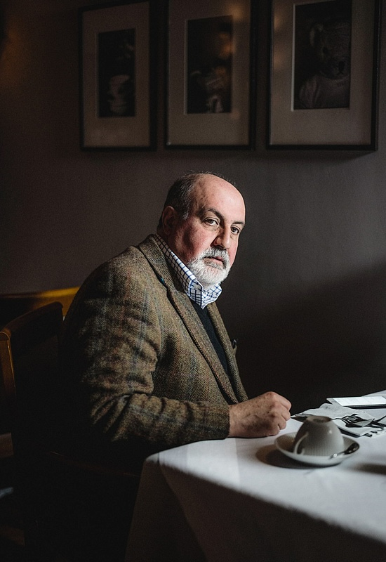

Мы не знаем, что произойдет завтра.
Проблема не в том, что мы ошибаемся в прогнозах. Проблема в том, что мы даже не знаем, каких событий не учитываем.
Самые разрушительные события редки, непредсказуемы и имеют огромные последствия.
История движется не средними значениями,а крайностями.
Те, кто строят системы, предполагая "нормальное поведение" рынка, обречены.
Единственная разумная стратегия - построить такую модель, которая переживет неизвестное.
Вы не обязаны знать будущее.
Но вы обязаны не быть уничтоженными им.
